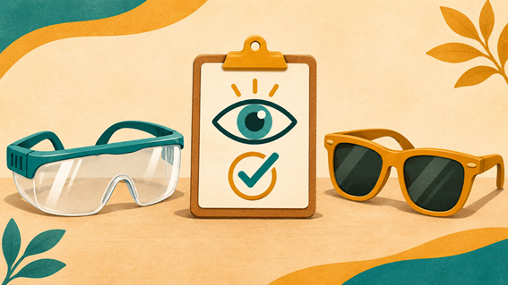

Como prevenir a perda da visão.
A prevenção da perda de visão depende da causa. Em alguns casos, proteger os olhos ajuda a evitar lesões. Em outros, descobrir uma doença cedo e iniciar o tratamento pode ajudar a preservar a visão.
Cuide da saúde dos olhos mesmo sem sentir incômodo. Algumas doenças, como o glaucoma, podem avançar sem sintomas perceptíveis no início. A consulta oftalmológica ajuda a identificar alterações mais cedo. Pergunte ao oftalmologista qual é o intervalo entre consultas indicado para você, especialmente se houver casos de glaucoma na família.
Diabetes e saúde dos olhos.
Diabetes e saúde dos olhos. Se você tem diabetes, inclua os olhos no acompanhamento. Manter a glicose e a pressão arterial sob controle ajuda a reduzir o risco de desenvolver ou agravar a retinopatia diabética, uma complicação que afeta a retina. Os exames oftalmológicos são importantes mesmo quando a visão parece normal.
Proteção dos olhos no dia a dia
Ao ar livre, use óculos de sol com proteção contra os raios ultravioleta.
Use proteção adequada para cada atividade. Óculos de segurança ajudam a prevenir lesões em tarefas com risco de partículas ou respingos de produtos químicos.
Acidentes com os olhos
Se cair poeira ou um cisco no olho, evite esfregar e enxágue com água limpa. Se a sensação de cisco continuar, procure atendimento. Se um fragmento atingir o olho em alta velocidade, como pode acontecer ao usar ferramentas, ou ficar preso no olho, procure um serviço de urgência imediatamente. Evite pressionar o olho ou tentar retirar o fragmento.
Se um produto químico, como água sanitária, respingar no olho, comece a lavar imediatamente com água limpa e corrente por pelo menos 20 minutos. Depois, procure um serviço de urgência.
Se a visão diminuir de repente em um ou nos dois olhos, procure imediatamente um serviço de urgência.
Cuidado dobrado com a visão das crianças. Uma criança pode ter dificuldade para enxergar sem perceber ou sem saber explicar o que está acontecendo. Por isso, a observação da família, dos cuidadores e dos professores é importante. Aproximar muito o livro ou os brinquedos do rosto, apertar os olhos para ver de longe ou ter dificuldade para acompanhar o que está escrito no quadro são sinais que merecem atenção. Se a escola perceber esses comportamentos, pode conversar com a família. Quando houver suspeita de dificuldade visual, procure uma unidade de saúde para orientar a avaliação da visão da criança.
Uso excessivo de tela
Por que fazer pausas no uso de telas?
Passar muito tempo seguido usando celular, tablet ou computador, ou assistindo à televisão, pode causar cansaço visual, ardor nos olhos, visão embaçada e dor de cabeça. Para aliviar o desconforto, especialmente durante atividades de perto, a Sociedade Brasileira de Pediatria orienta a regra dos 20-20-20. A cada 20 minutos, faça uma pausa de 20 segundos e olhe para algo a cerca de 6 metros de distância. Na infância, incentivar brincadeiras ao ar livre também ajuda a reduzir o risco de desenvolver miopia. As pausas ajudam a aliviar o cansaço visual. Se o desconforto ou a visão embaçada persistirem, procure uma avaliação.
Aviso para o site
Este conteúdo tem caráter educativo e informativo. Ele não substitui uma consulta nem deve ser usado como orientação médica. Para esclarecer dúvidas sobre sua saúde ocular ou receber orientações individuais, procure um oftalmologista.
Fontes consultadas.
Ministério da Saúde — Glaucoma
Secretaria da Saúde do Espírito Santo — Linha Guia de Diabetes (PDF)
Instituto Nacional do Olho dos Estados Unidos — Cuidados com a saúde dos olhos (em inglês)
Secretaria da Saúde de Santa Catarina — Protocolo de oftalmologia e sinais de urgência
Ministério da Saúde. Caderneta da Criança, seção sobre alterações na visão e na audição.
https://bvsms.saude.gov.br/bvs/publicacoes/caderneta_crianca_menino_6ed.pdf
Sociedade Brasileira de Pediatria. Pandemia de miopia, com a orientação sobre a regra dos 20-20-20.
https://www.sbp.com.br/pediatria-para-familias/doencas/pandemia-de-miopia/
Sociedade Brasileira de Pediatria. Miopia na criança, com orientações sobre atividades ao ar livre.
https://www.sbp.com.br/miopia-na-crianca-conceito-fatores-de-risco-tratamento-e-complicacoes/
Conselho Brasileiro de Oftalmologia — Acidentes e o NHS — Lesões oculares (em inglês).
Conselho Brasileiro de Oftalmologia: CBO, https://cbo.com.br/pacientes/duvidas/duvidas_acidentes.htm?utm_source=chatgpt.com, 2 fontes adicionais